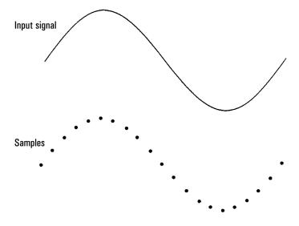
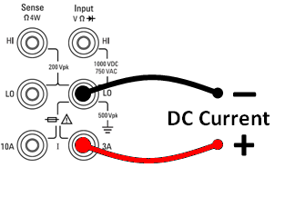
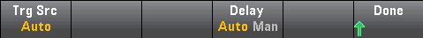
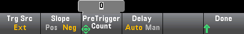
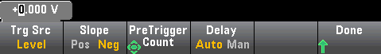
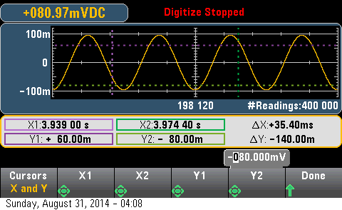

Digitizing
The digitizing feature (applies only to the 34465A/70A with the DIG option) provides a front–panel user interface that allows you to quickly set up digitized measurements. Digitizing is the process of converting a continuous analog signal, such as a sine wave, into a series of discrete samples (readings):

See Digitizing Measurements for a tutorial on digitizing and more information on samples rates vs. input frequencies.
The DMM digitizes by sampling the input signal using either the DCV function (default) or the DCI function with autorange and autozero disabled.

Loss of data possible - local to remote transition clears instrument memory: When data logging or digitizing to memory, if you access the instrument from remote (send a SCPI or common command)* and then return to local (by pressing [Local]), the readings in memory are cleared and the instrument returns to Continuous mode.
For data logging only, you can prevent this situation by data logging to a file instead of to memory (see Data Log Mode for details). You can also prevent this from happening for data logging or digitizing by taking steps to keep the instrument from being accessed from remote. To prevent remote access, you may want to disconnect the LAN, GPIB, and USB interface cables from the instrument before starting the measurements. To prevent remote access via LAN, you can connect the instrument behind a router to minimize the possibility of remote access. You can also disable the various I/O interfaces from the front panel menus under [Utility] > I/O Config.
To view the status of a data logging or digitizing operation remotely, use the instrument’s Web User Interface. The Web User Interface monitor does not set the instrument to remote.
*When accessed from remote, the instrument will continue data logging or digitizing to completion, and you can retrieve the readings from remote.
Digitizing Overview
This section is a summary of the steps involved in setting up digitizing. Detailed steps are described below in Detailed Digitizing Steps.
- Select DCV or DCI measurements and connect to the DUT.
- Select Digitize mode (press [Acquire] > Acquire > Digitize).
- Specify the sample rate (for example, 50 kHz) or sample interval (for example, 20 µS).
- Specify the duration as amount of time or number of readings.
- Select trigger source (Auto, Ext, or Level).
- For external, specify polarity.
- For level, use Range +/- to select fixed range, then specify threshold and polarity.
- Specify delay time or use auto.
- Optional: If using the level or external trigger source, specify a pretrigger count (number of readings to store before the trigger event occurs).
- Press [Run/Stop]. Digitizing starts when the trigger event occurs and stops after duration or when you press [Run/Stop] again.
- Save the digitized data to a file.
- Optional: select trend chart to view digitized data.
 The histogram and statistics functions can be used when digitizing. However, this data will not be updated until digitizing is complete.
The histogram and statistics functions can be used when digitizing. However, this data will not be updated until digitizing is complete.
Detailed Digitizing Steps
Step 1: To digitize DC voltage, press DCV and configure the test leads as shown.

To digitize DC current, press DCI and configure the test leads as shown.

On the 34461A/65A/70A, you can also configure the measurement using the 10 A terminal, which is recommended when measuring current above 1 A:

Step 2: Press [Acquire] on the front panel and then press the Acquire softkey:

Press the Digitize softkey:

Step 3: The Digitize menu opens:
With Sample Rate selected, use the up/down arrow keys to select a sample rate in samples per second (Hz), or press the Sample Rate softkey to specify a sample interval (time between samples):
Step 4: Press the Duration softkey to specify the length of time to digitize:
or, press Duration again to specify the total number of samples to digitize:
Step 5: Press Trigger Settings to view or change the trigger source. By default, the trigger source is set to auto. You can also select external and level triggering when digitizing.

Press Trg Source and select one of three trigger sources:
Auto - the instrument automatically triggers immediately after you press [Run/Stop] or [Single].
Step 5a Configure external triggering: After pressing Ext, this menu appears:

Ext - the instrument triggers when an edge of the appropriate slope arrives at the rear-panel Ext Trig connector. You can specify the slope on the softkey menu that appears when Trg Src is set to Ext. To select external triggering, press Ext, and select either Pos or Neg slope:
Step 5b Select level trigger: Level - (34465A/70A with DIG option only) the instrument issues one trigger when the specified measurement threshold with the specified positive or negative slope occurs. To select level triggering, press Level and specify the level threshold and Pos or Neg slope:

|
|
Select the expected measurement range using the [Range] [+] and [-] keys before setting the level trigger voltage or current.
|
Step 6: Specify delay time
Specify the delay that occurs prior to digitizing. This delay is inserted once, after the trigger event occurs, and before digitizing begins. This can be automatic (the instrument chooses the delay based on the instrument’s settling time) or manual (you specify the delay time).
Step 7: (Optional) Specify pretrigger count.
When an External or Level Trigger Source is used, you can specify a pretrigger count. After specifying a pretrigger count, readings are taken and held in a buffer while waiting for the trigger event to occur. When the trigger event occurs, the buffered readings are transferred to reading memory and the remaining readings are recorded as usual. If the trigger event occurs before Pretrigger Count readings have been taken, the trigger event will still take effect and digitizing will complete without having taken all of the pretrigger readings. The Pretrigger Count is limited to one less than the total number of readings specified to be taken by the Duration setting.
Step 8: Press [Run/Stop] to start the digitizing process. Digitizing will begin when the specified trigger event occurs and after the specified delay has elapsed. • Digitizing is displayed at the top of the display while digitizing; when finished, Digitize Stopped is displayed.
Step 9: All readings taken during digitizing are saved in volatile memory, when digitizing is finished, press the Save Readings softkey to specify a file location and save the readings.
Step 10: (Optional) Press Display > Display Trend to view the trend chart. The Trend Chart is particularly useful for viewing and analyzing digitized measurements. X and Y cursors (shown below), tracking cursors, pan control, and zoom allow you to analyze digitized data. See Trend Chart (Digitize and Data Log Modes) for details.
